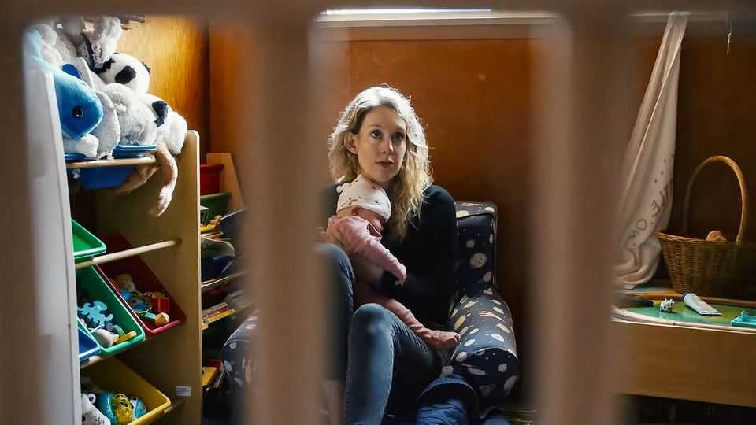

With Elizabeth Holmes, can you ever really see everything?
A riveting new documentary, “You Can See Everything”, is Shakespearean in ambition and nuance

Oct 15th 2026
THERE IS nothing more seductive than the idea of unfettered access. When a subject is mysterious, slippery and high-profile, it is even more enticing. The longer a person is in front of a camera, the likelier one is to spot an inconsistency or a lie, or feel resolved they have found out the truth. For truth-telling was surely the goal of Nathan Fielder, a Canadian film-maker and comedian, when he entered Elizabeth Holmes’s home for 34 days before she reported to federal prison in Texas in May 2023. She had been sentenced to more than 11 years for fraud and conspiracy related to her blood-testing startup, Theranos.
“You Can See Everything”, Mr Fielder’s documentary, is an enthralling display of the tension between observer and observed. (It opens in American cinemas on October 16th and in British ones in November.) Mr Fielder and his co-director, Lance Oppenheim, moved in with “Liz”—as well as her partner, Billy Evans, and their two young children—in their oceanfront cottage in San Diego. Subjects who throw open their door would seem to have nothing to hide. But is their openness itself a disguise? The documentary keeps viewers guessing—and riveted.
It is a film of two acts. In the first, viewers witness a brilliant and surreal sequence of intense and often uncomfortable scenes: Ms Holmes insisting that she has not once told a lie in her entire adult life, for example, and Mr Fielder quizzing Mr Evans on whether he has been scammed by Ms Holmes. Time and again Mr Fielder tries to pin his subject down on matters big and small, such as whether Theranos’s device really could “perform any test” (she says she was misinterpreted) or whether she understands the joke in a famous comedy routine (apparently not). Often she obfuscates; her replies sound like the “Glomar” response the CIA gives in testimony (neither denying nor confirming the existence of material).
By the time Ms Holmes reports to prison, Mr Fielder remains baffled by her. But is she being careful because she is a liar? Or is she so universally believed to be a liar that she deeply fears making even the smallest error in anything she says? Many film-makers might have ended the project on that ambiguous note. Mr Fielder, instead, ambitiously embarks on an elaborate second adventure, enlisting the help of others who have been sucked into Ms Holmes’s orbit, to try to solve the riddle. This makes for spectacular theatre. Mr Fielder apes tactics from Shakespeare, staging a play within a play (within a play).
The film echoes other great works of the “journalist and the murderer” genre. Just as Sarah Koenig of the hit podcast “Serial” struggled with the “bare fact of why on earth would a guilty man agree to let me do this story, unless he was cocky to the point of delusion”, Mr Fielder cannot understand why Ms Holmes would let him so far in unless she truly believed people have the wrong perception of her. Yet intimacy with charming and potentially dishonest subjects breeds a new suspicion: that the journalist or film-maker has been taken in, and that neither subject nor narrator can be trusted.
John Carreyrou, the reporter at the Wall Street Journal who helped uncover Ms Holmes’s fraud, described in his excellent book, “Bad Blood”, how “she emitted a reality distortion field that forced people to momentarily suspend disbelief.” By the conclusion of “You Can See Everything” Mr Fielder appears to believe in at least a little of what Ms Holmes is selling: that she loves her partner and her family, for instance, even though she gave up the last remaining days she would spend with them during their childhoods to make this film. Perhaps believing her makes Mr Fielder a fool. But in the process of potentially being duped, he has also revealed just how brilliant a film-maker he is, too. ■